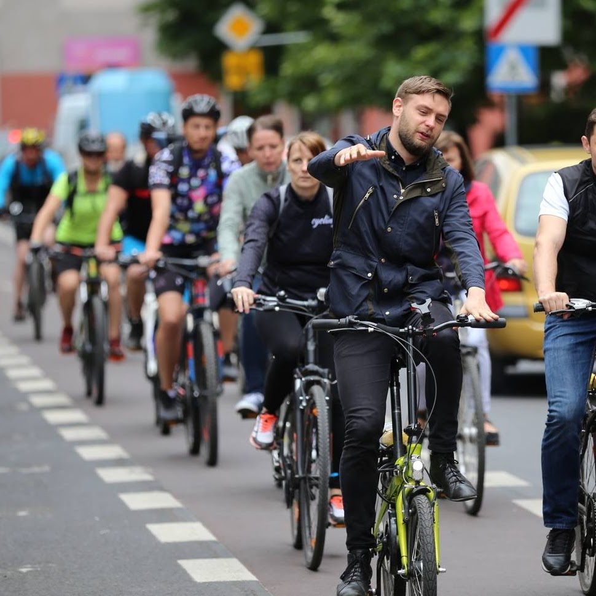
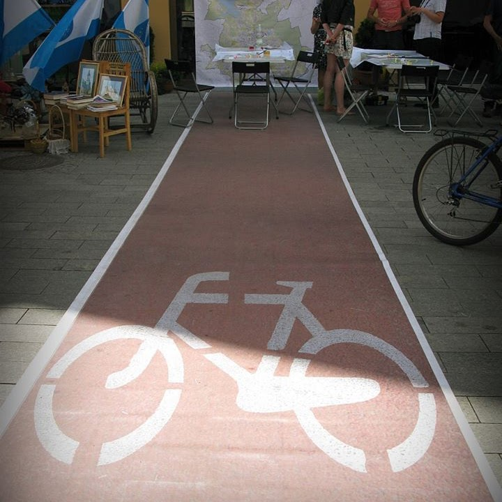
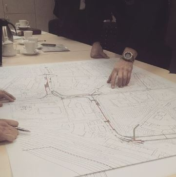

Pracownia transportu drogowego
Firma Velo Tobiasz Nykamowicz powstała w 2015 r. i specjalizuje się w realizacji zadań studialnych, koncepcyjnych oraz projektowych w zakresie szeroko rozumianego transportu rowerowego. Zdobywane doświadczenie oraz współpraca w interdyscyplinarnych zespołach projektowych (urbaniści, socjologowie, branżowcy) pozwoliło zwiększyć obszar działalności na rzecz zrównoważonego transportu, ze szczególnym uwzględnieniem pieszych, rowerzystów oraz transportu zbiorowego.
-

Rzetelna inwentaryzacja
z wykorzystaniem mobilnych narzędzi GIS
-

Projektowanie partycypacyjne
z udziałem wszystkich interesariuszy
-

Dbałość o rozwiązania
w zgodzie z najlepszymi standardami dla rowerzystów, pieszych oraz osób o ograniczonej mobilności
-
+ 10
lat na rynku
-
+1000 km
zaprojektowanych dróg
-
+ 500
godzin konsultacji społecznych
Poznaj miasta, które nam zaufały